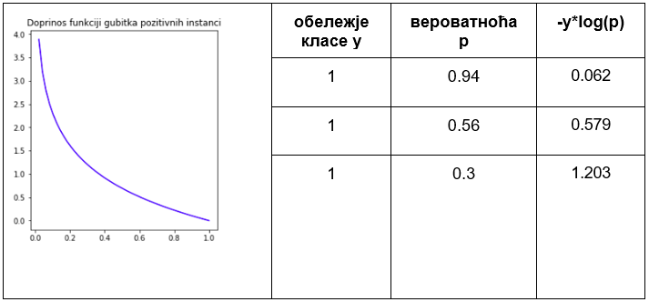
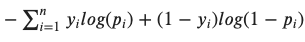

Логистичка регресија¶

Логистичка регресија је познати алгоритам који се користи за креирање модела бинарне класификације. Он нам уз информацију о томе којој класи припада инстанца израчунава и вероватноћу припадности тој класи.
Замислимо да располажемо скупом података са два атрибута X1 и X2 и да су инстанце овог скупа приказане као на доњој слици. Дуж x-осе је представљен атрибут X1, дуж y-oсе атрибут X2, док боја тачака означава класу којој свака од ових инстанци припада. Сложићеш се да би неки линеарни модел који одређује праву у равни могао да нам помогне у решавању задатка класификације тако што би раздвојио класе - једна би се нашла испод ове праве, а друга изнад. Да би могли да закључујемо на тај начин, упознајмо сигмоидну функцију.
{kind=link}
ТоДо: прилагодити обележја
Сигмоидна функција је популарна функција у машинском учењу, одређена је једначином σ(x) = 1/(1+e-x) и њен график изгледа као на доњој слици.
{kind=link}
График сигмоидне функције
Оно што одмах можемо да приметимо је да ова функција узима распон вредности од 0 до 1. Што су вредности броја x мање то је вредност ове функције ближа 0 и, слично, што је вредност броја x већа то је вредност сигмоидне функције ближе 1. За x=0 вредност сигмоидне функције је 0.5. Уколико ову вредност прогласимо прагом и уведемо правила:
ако је вредности сигмоидне функције већа или једнака од 0.5, придружи x позитивној класи и
ако је вредност сигмоидне функције мања од прага 0.5 придружи x негативној класи добићемо једну функцију подесну за задатак класификације.
Делује нам и да што су вредности броја x веће то је одлука да се x придружи позитивној класи уверљивија јер значајно прелазимо изнад вредности прага. Делује и да што су вредности броја x мање да је одлука да се x придружи негативној класи уверљивија јер значајно прелазимо испод вредности прага. За вредности броја x које су око нуле ови аргументи су слабији. Зато сигмоидној функцији можемо придружити и интерпретацију вероватноће припадности некој класи.
Уколико повежемо сигмоидну функцију и једначину линеарног модела добићемо једначину модела логистичке регресије која у општем случају гласи y = σ(X1, X2, … Xn) = 1/(1+e- (ꞵ0 + ꞵ1X1 + ꞵ2X2 + ꞵ3X3 + … + ꞵnXn)). Аргументи X1, X2, … Xn означавају атрибуте у скупу података, док су њене вредности у распону од 0 до 1 и као што смо видели смислене за задатак класификације. Овој једначини можемо да придружимо и следећу геометријску интерпретацију: подаци се класификују или испод или изнад ”праве” која је одређена једначином линеарне везе коју смо у старту и замислили.

Уколико имамо тачно један атрибут, ”права” коју помињемо је заиcта права. Ако имамо тачно два атрибута, ”права” је заправо раван у простору. Ако имамо вишe о два атрибута, ”праве” су, математичким језиком, хиперравни.
Унакрсна ентропија¶
Функција грешке која карактерише логистичку регресију се зове унакрсна ентропија. Упознајмо прво интуицију која лежи иза ове функције, а потом упознајмо и њен математички облик.
Рекли смо да вредност коју нам израчунава модел логистичке регресије тумачимо као вероватноћу припадности једној од класа и да се водимо правилом да ако та вредност преће праг 0.5 то протумачимо као припадност позитивној класи, а уколико та вредност буде мања од 0.5 то протумачимо као припадност негативној класи. Уколико вредност вероватноће буде баш 0.5, то тумачимо као припадност позитивној класи.
Функцију грешке увек израчунавамо на скупу за тренирање. У њему за сваку инстанцу знамо која су тачна обележја па увек можемо да их упоређујемо са обележјима која је израчунао тј. придружио модел.
Претпоставимо да је за три инстанце које припадају позитивној класи модел логистичке регресије редом израчунао вредности 0.94, 0.56 и 0.3. У првом случају је вредност блиска јединици па означава сигурну одлуку модела. У другом случају је ова вредност мања и ближе прагу класификације али довољна за добру одлуку модела. У трећем случају је вредност испод прага па би навела модел да погреши. Приликом дизајнирања функције грешке желимо да више казнимо израчунавања модела која за позитивне инстанце више одступају од вредности 1 тј. да учинимо да њихови доприноси укупној грешци модела буду већи. Једна таква функција која задовољава тражено својство је -log(x) чији је график приказан на слици. Предзнак минус нам је потребан да би грешка добила позитивну вредност јер је логаритам негативан за вредности аргумента функције које су од 0 до 1. На графику можемо и да видимо да су вредности функције мале за аргументе ближе 1 тј. да су вредности функције веће за аргументе који су ближе нули. Тако ће сада, редом, доприноси укупној грешци издвојених инстанци бити редом -log(0.94)=0.062, -log(0.56)=0.579 и -log(0.3)=1.203 и баш односа величина који смо желели. Можемо их забележити и у табели, на начин на који смо то радили и у задатку линеарне регресије. У првој колони ћемо сместити обележје класе (тачну вредност), у другој колони вероватноћу p коју је израчунао модела док ћемо у трећој колони уписати вредност -log(p). Приметимо да у имену колоне стоји -y*log(p) но како је y=1 ово је исто као и -log(p).
{kind=link}
Укупна вредност функција унакрсне ентропије се добија када се саберу доприноси грешака свих позитивних и свих негативних инстанци (слично као што смо радили у задатку линеарне регресије и средњеквадратне грешке). То скраћено записујемо у облику  где заправо први фактор сумира доприносе грешака позитивних инстанци а други фактор доприносе грешака негативних инстанци. Вредност yi je тачно обележје класе из скупа за тренирање а pi вероватноћа коју је израчунао модел логистичке регресије. Ова грешка се зове унакрсна ентропија (енгл. binary crossentropy).
{kind=link}
Вредности непознатих параметара ꞵ у моделу логистичке регресије се проналазе тако што се бира она вредност параметара за коју је функција унакрсне грешке најмања. Техника градијентног спуста нам може помоћи и у овом случају.
Упознајмо сада један мало другачији алгоритам класификације.
Формула за унакрсну ентропију:
$-sum_{i=1}^n { y_i log(p_i) + (1-y_i)log(1-p_i)}$